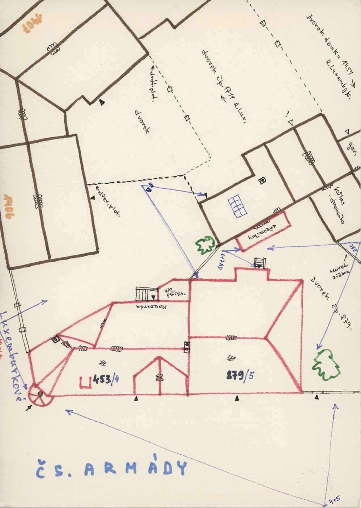
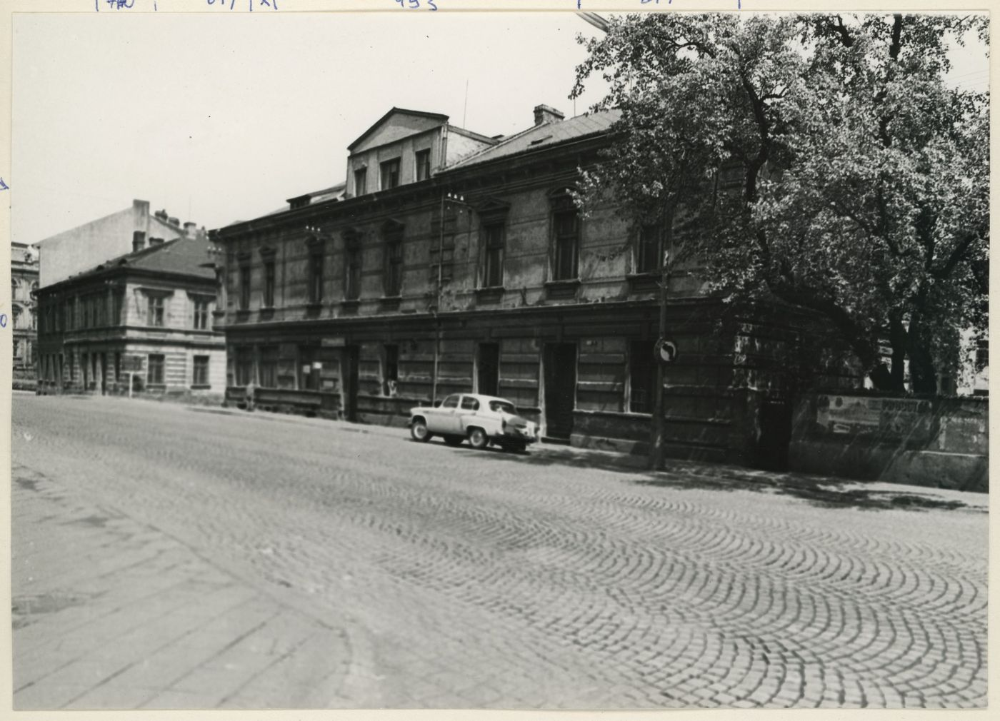
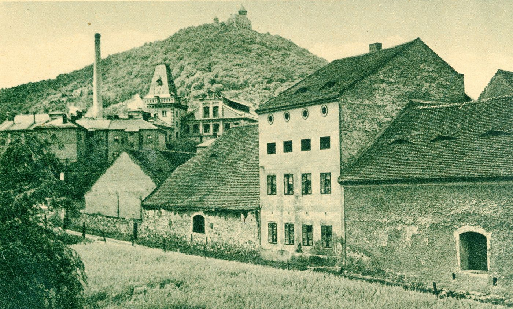
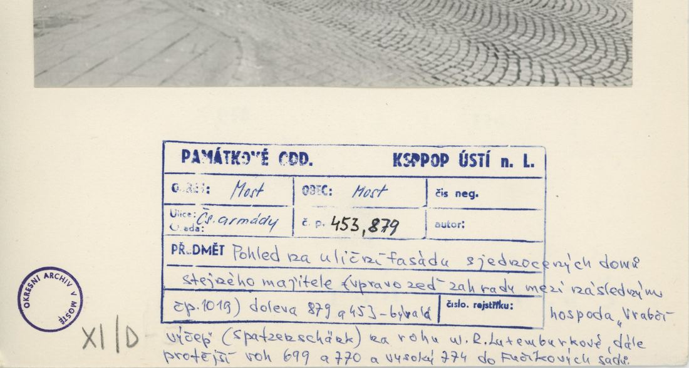
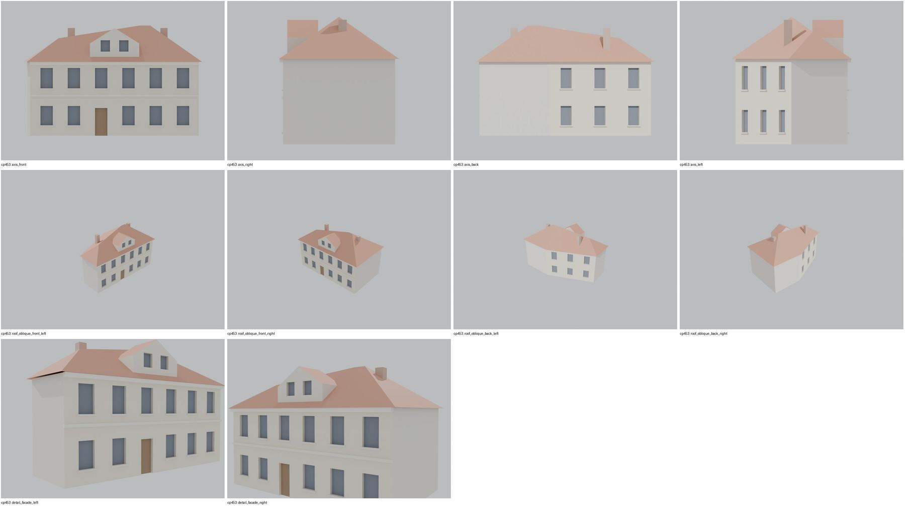

Identita domu
Dům na nároží R. Luxemburkové (plán cp_453,879_001: „453/4“, kruhový nárožní prvek k Luxemburkové, „mansarda“, štítový vikýř uprostřed). Foto cp_453,879_001: dlouhé dvoupodlažní průčelí s trojúhelným štítem/vikýřem uprostřed; pohlednice P-000936 (dvůr pivovaru v pozadí).
Použité prameny: cp_453,879_001 PLANE+PHOTO; P-000936.
GIS: GIS id 1519 (133 m², 5 vrcholů). V oblasti „Cs_Armady“ je dům veden podruhé se stejnými přílohami.
Prameny (4 příloh)
Všechny přílohy domu v databázi Libuše, každá otevřená a zapsaná v plan_search.json. Stav rešerše plánů: found; situační/střešní náčrt (ruční, nekótovaný, PLANE,BW) – není stavební výkres; půdorysné rozměry z GIS nebo odhad. Kliknutím otevřete větší náhled.


situační náčrt
SHA-256 7f7e49ee619f…


fotografie
SHA-256 b2e1a4ff0ae3…


pohlednice
SHA-256 6b5bb9495a95…


archivní karta (rub) · výřez textu
SHA-256 cf14a6e37ff3…
Model
| Revize modelu | r2 (zachované revize: r1, r2) |
|---|---|
| Poloha | GIS půdorys id 1519 |
| Šířka průčelí | 16,36 m |
| Výška okapu | 7,20 m (odhad) |
| Podlaží | 2 |
| Střecha podle pramenů | sedlová s mansardovým vikýřem |
| Střecha v modelu | valbová nad nepravidelným půdorysem (přímá kostra) |
| Otvory | 20 |
| Vikýře / vedlejší hmoty | 1 / 0 |
| Polygonů | 268 |
Zdroje rozměrů, jak jsou zapsány v plánu modelu
| Rozměry | GIS id 1519 pentagon (front 16.36 m, right depth 9.41 m, diagonal rear-left) |
|---|---|
| Průčelí | photo cp_453,879_001: 2 storeys, central triangular gable dormer; sketch cp_453,879_001: mansard room, round corner element (not modelled) |
| Střecha | skeleton hip 35 deg + gable dormer |
Kontrola: 10 povinných pohledů

Nálezy
- 6 os + dveře, štítový vikýř uprostřed se 2 okny, skeletonová valba nad pětiúhelníkem (hřeben, nároží, úžlabí u šikmé zadní stěny), šikmá zadní fasáda 3 osy – odpovídá cp_453,879_001 a náčrtu (kruhový nárožní prvek vynechán)
Opravy
- bez oprav
Hypotézy
Vše níže je model_hypothesis, provisional, locked: false.
- kruhový nárožní prvek z plánu nemodelován (nejasný tvar)
- osy a výšky odhad
- round corner element of the sketch omitted
- diagonal rear wall windows
- all storey heights, opening sizes and roof pitches are estimates from photographs (model_hypothesis, provisional, locked=false)
Soubory
- Model čp. 453, GLB
- Pracovní složka: F:\MOST\output\zatecka_street_claude_2026-10-17\houses\cp453\
plan_search.json,geometry_plan.json,README.md,texture_handoff_spec.json,r2/cp_453_G_r2.blend,r2/qa/qa_review.json